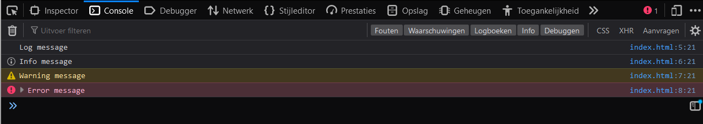
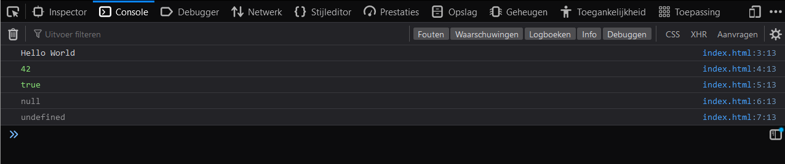

Introduction 
In this course you will be learning about the basics of JavaScript.
Lesson 1 - Console and Comments (L1)
In this lesson you will learn how to use the console to print messages to the console and how to use comments in javascript.
Lesson 1 - Console and Comments (L1)
Console
The console is a tool that is used to debug javascript code. It is also used to print messages to the console. There are several functions that can be used to print messages to the console. In this lesson we will be covering the most commonly used functions.
console.log
The console.log function is used to print a log message to the console.
The log message can be a string, number, boolean, or object.
We will be covering different kinds of data types in a later lesson.
To print a log message to the console with the text "Log message", you can use the following syntax:
console.log("Log message");
console.info
The console.info function is used to print an info message to the console.
To print an info message to the console with the text "Info message", you can use the following syntax:
console.info("Info message");
console.warn
The console.warn function is used to print a warning message to the console.
To print a warning message to the console with the text "Warning message", you can use the following syntax:
console.warn("Warning message");
console.error
The console.error function is used to print an error message to the console.
This function is commonly used to print errors to the console.
We will be covering errors in a later lesson.
To print an error message to the console with the text "Error message", you can use the following syntax:
console.error("Error message");
Comments
Comments are used to add notes to your code. They are not executed by the javascript engine. Comments are useful for adding notes to your code and for temporarily disabling code.
There are two types of comments in javascript:
- Single line comments
- Multi line comments
Single line comments
Single line comments are used to add a single line of comments to your code. To add a single line comment, you can use the following syntax:
// This is a single line comment
Multi line comments
Multi line comments are used to add multiple lines of comments to your code. To add a multi line comment, you can use the following syntax:
/*
This
is a
multi line
comment
*/
Lesson 1 - Console and Comments (L1)
Task L1.1 - Hello World
In this task you will write a javascript script that prints "Hello World" to the console. To set up the environment, you will need to create a folder called hello-world and add the code below in a file called index.html. The name of the folder and the file can be anything you want, but for the sake of this tutorial, we will use the names mentioned above.
<!DOCTYPE html>
<html lang="en">
<head>
<script src="index.js"></script>
</head>
<body></body>
</html>
In this course we will not be going into detail about HTML, but for now, you can think of it as a container for your javascript code. The script tag in the head section of the HTML file will load the javascript code from the index.js file.
Next you will need to create the index.js file and log the message "Hello World" to the console. To run the code, open the index.html file in your browser. To view the console, press F12 and select the console tab in the developer tools window.
This is what your console should look like (Your dev tools window may look different):

Task L1.2 - Console functions
In this task you will learn how to use the console.log, console.info, console.warn, and console.error functions. To set up the environment, you will need to create a folder called console-functions and create a file called index.js. You can use the same index.html file from the previous task.
Next log 4 different messages to the console using the console.log, console.info, console.warn, and console.error functions. Add meaningful comments to your code to explain what each function does.
This is what your console should look like (Your text may be different): 
Notice the difference between the log, info, warn, and error messages.
If you are interested in learning more about console functions, you can read the documentation here: https://developer.mozilla.org/en-US/docs/Web/API/Console
Lesson 2 - Data Types (L2)
In this lesson you will learn about the different data types in JavaScript. You will learn how to use the different data types and how to convert between them.
Lesson 2 - Data Types (L2)
In JavaScript there is no need to declare a variable’s data type, as it is automatically assigned when the variable is initialized. This means that the same variable can be used to hold different data types, and the data type can change during the execution of a program. Even though JavaScript is a loosely typed language - meaning that you don’t have to declare the data type of a variable - , it is still a good idea to be aware of the different data types and how they behave.
What is a data type?
In programming, a data type is a classification of data which tells the compiler or interpreter how the programmer intends to use the data. For example, an integer is a data type that can only hold whole numbers, while a string is a data type that can hold a sequence of characters.
What are the different data types?
There are 7 basic data types in JavaScript:
- Number - Any number, including numbers with decimals:
4,8,1516,23.42. - String - Any grouping of characters on your keyboard (letters, numbers, spaces, symbols, etc.) surrounded by single quotes:
' ... 'or double quotes" ... ". Though we prefer double quotes. Some people like to think of string as a fancy word for text. - Boolean - This data type only has two possible values— either
trueorfalse(without quotes). It’s helpful to think of booleans as on and off switches or as the answers to a “yes” or “no” question. - Null - This data type represents the intentional absence of a value, and is represented by the keyword
null(without quotes). - Undefined - This data type is denoted by the keyword
undefined(without quotes). It also represents the absence of a value though it has a different use thannull. - Symbol - A newer feature to the language, symbols are unique identifiers, useful in more complex coding. No need to worry about these for now.
- BigInt - Used to represent integers with arbitrary precision. See the MDN documentation for an example.
In this course, we will primarily be working with the first 5 data types.
What is the difference between undefined and null?
undefined and null both represent the absence of a meaningful value.
undefined is a variable that has been declared but not assigned a value.
null is an assignment value.
It can be assigned to a variable as a representation of no value.
How do you log a variable’s data type?
To find out the data type of a variable, you can use the typeof operator.
The typeof operator returns a string with the data type name.
For example, if you were to log the data type of the number 42, you would get the string "number".
The following code logs the data type of the number 42 to the console:
console.log(typeof 42); // Output: "number"
The typeof operator can be used on any variable, including variables that hold other data types.
Lesson 2 - Data Types (L2)
Taks L2.1 - Data Types
In this task you will learn about the different data types in javascript. To set up the environment, you will need to create a folder called data-types and create a file called index.js. You can use the same index.html file from the previous lesson.
Next, log the following data types with the following values to the console:
- string
"Hello World" - number
42 - boolean
true - null
- undefined
The output should look like this in the console: 
Notice that the data types are logged in different colors. This is because the console uses different colors to distinguish between different data types.
Task L2.2 - typeof
In this task you will learn about the typeof operator.
To set up the environment, you will need to create a folder called typeof and create a file called index.js. You can use the same index.html file from the previous task.
Next, log the following data types of the following values to the console:
- string
"Hello World" - number
42 - boolean
true - null
- undefined
The output should look like this in the console:

Notice that typeof null returns object.
This is a bug in javascript that has been around for a long time and will probably never be fixed.
It is not a bug in the typeof operator, but in the way that the null value is implemented.
Lesson 3 - Operators (L3)
In this lesson you will learn about operators in JavaScript and how to use them in your code. JavaScript has the following types of operators.
- Arithmetic Operators
- Assignment Operators
- Comparison Operators
- Logical Operators
- Type Operators
- Bitwise Operators
We will only cover the first 5 types of operators in this course. Assignment operators are covered in the next lesson. The last type of operators are not necessary to learn for this course.
Lesson 3 - Operators (L3)
Arithmetic Operators
There are 8 arithmetic operators in JavaScript. These operators are used to perform arithmetic on numbers (literals or variables). The following table lists the arithmetic operators in JavaScript.
| Operator | Description |
|---|---|
| + | Addition |
| - | Subtraction |
| * | Multiplication |
| ** | Exponentiation |
| / | Division |
| % | Modulus |
| ++ | Increment |
| -- | Decrement |
Examples
5 + 5 // 10
5 - 5 // 0
5 * 5 // 25
5 ** 5 // 3125 (5 * 5 * 5 * 5 * 5)
5 / 5 // 1
5 % 5 // 0 (5 / 5 = 1 remainder 0)
- The exponentiation operator returns the result of raising the first operand to the power of the second operand.
- The modulus operator returns the remainder of a division operation.
String Concatenation
The addition operator can also be used to concatenate strings and numbers.
"Hello" + " " + "World" // "Hello World"
"Hello" + " " + 42 // "Hello 42"
We will cover the increment and decrement operators in the next lesson.
Comparison Operators
There are 9 comparison operators in JavaScript.
| Operator | Description |
|---|---|
| == | Equal to |
| === | Equal value and equal type |
| != | Not equal |
| !== | Not equal value or not equal type |
| > | Greater than |
| < | Less than |
| >= | Greater than or equal to |
| <= | Less than or equal to |
| ? | Ternary operator |
Examples
5 == 5 // true
5 == "5" // true
5 === 5 // true (5 is equal to 5)
5 === "5" // false (5 is not equal to "5")
5 != 5 // false
5 != "5" // false
5 !== 5 // false (5 is equal to 5)
5 !== "5" // true (5 is not equal to "5")
5 > 5 // false
5 > 10 // false
10 > 5 // true
5 < 5 // false
5 < 10 // true
10 < 5 // false
5 >= 5 // true (5 is equal to 5)
5 >= 10 // false (5 is not greater than or equal to 10)
10 >= 5 // true (10 is greater than 5)
- The equality operators (== and ===) return true if the operands are equal.
- The inequality operators (!= and !==) return true if the operands are not equal.
- The greater than operator (>) returns true if the left operand is greater than the right operand.
- The less than operator (<) returns true if the left operand is less than the right operand.
- The greater than or equal to operator (>=) returns true if the left operand is greater than or equal to the right operand.
- The less than or equal to operator (<=) returns true if the left operand is less than or equal to the right operand.
We will cover the ternary operator in the eighth lesson.
Logical Operators
There are 3 logical operators in JavaScript.
| Operator | Description |
|---|---|
| && | And |
| || | Or |
| ! | Not |
Examples
true && true // true
true && false // false
false && true // false
false && false // false
true || true // true
true || false // true
false || true // true
false || false // false
!true // false
!false // true
- The logical and operator (&&) returns true if both operands are true.
- The logical or operator (||) returns true if one of the operands is true.
- The logical not operator (!) returns the opposite of its operand.
Type Operators
There are 2 type operators in JavaScript.
| Operator | Description |
|---|---|
| typeof | Returns the type of a variable |
| instanceof | Returns true if an object is an instance of an object type |
The instanceof operator is used to check the type of object. This operator is covered in another course, you do not need to worry about it for now. We have already covered the typeof operator in the previous lesson, but we will show it one more time in the code-block below.
Examples
typeof 5 // "number"
typeof "5" // "string"
typeof true // "boolean"
typeof undefined // "undefined"
typeof null // "object"
Lesson 3 - Operators (L3)
To set up the environment for the tasks, you will need to create a folder called operators and create a file called index.js. You can use the same index.html file from the first lesson.
Task L3.1 - Arithmetic Operators
In this task you will learn how to use arithmetic operators.
Order of Operations
In maths, the order of operations is a set of rules that define the order in which operations are performed when evaluating an expression. The order of operations is important because it determines the result of an expression.
The order of operations is as follows:
- Parentheses
- Exponents, Roots
- Multiplication, Division, Modulus
- Addition, Subtraction
First, write down the result of the following expressions on paper:
2 + 23 - 14 * 28 / 22 ** 35 % 22 + 3 * 4(2 + 3) * 42 + 3 * 4 - 62 + 3 * (4 - 6)
Now, write a JavaScript program that will log the result of the following expressions to the console. When you are done, check your results with the ones you wrote down on paper. Are they the same?
Task L3.2 - String Concatenation
In this task you will learn how to use string concatenation.
Write a JavaScript program that will log the following string to the console (use string concatenation with the + operator):
Hello, my name is John Doe.
Next, write a JavaScript program that will log the following string to the console (The age can not be a string, it must be a number):
Hello, my name is John Doe. I am 30 years old.
Task L3.3 - Comparison Operators
In this task you will learn how to use comparison operators.
First, write down the result of the following expressions on paper:
2 > 15 < 32 >= 25 >= 13 <= 46 <= 22 == 22 == "2"2 != 22 == "2"2 === 22 === "2"2 !== 22 !== "2"
Now, write a JavaScript program that will log the result of the following expressions to the console. When you are done, check your results with the ones you wrote down on paper. Are they the same?
Task L3.4 - Logical Operators
In this task you will learn how to use logical operators.
First, write down the result of the following expressions on paper:
true && truetrue && falsefalse && truefalse && falsetrue || truetrue || falsefalse || truefalse || false!true!false
Now, write a JavaScript program that will log the result of the following expressions to the console. When you are done, check your results with the ones you wrote down on paper. Are they the same?
Task L3.5 - Logical Operators with Comparison Operators
In this task you will learn how to use logical operators with comparison operators.
First, write down the result of the following expressions on paper:
2 > 1 && 3 > 22 > 1 && 3 < 22 > 1 || 3 < 22 < 1 || 3 < 2!(2 < 1)!(2 > 1)!(2 < 1) && !(3 < 2)!(2 < 1) || !(3 < 2)
Now, write a JavaScript program that will log the result of the following expressions to the console. When you are done, check your results with the ones you wrote down on paper. Are they the same?
Lesson 4 - Variables (L4)
In this lesson you will learn about variables, which are used to store data. We will also cover assignment operators, which are used to assign values to variables. Lastly, we will cover the increment and decrement operators and the delete keyword.
Lesson 4 - Variables (L4)
Variables
Variables are a way to store data in a program. They are used to store data that can be used multiple times, such as a user's name and can be changed, such as a score.
Declaring Variables
Variables in JavaScript are declared using the var keyword (we will learn about other ways to declare variables later).
Next, we give the variable a name, which is used to refer to the variable later.
Finally, we can optionally assign a value to the variable.
var myVariable;
This declares a variable named myVariable with no value.
var myVariable = 5;
This declares a variable named myVariable and initializes it with the value 5.
Increment and Decrement Operators
There are two operators that can be used to increment and decrement a variable.
| Operator | Example | Same As |
|---|---|---|
++ | myVariable++ | myVariable = myVariable + 1 |
-- | myVariable-- | myVariable = myVariable - 1 |
Variables can be incremented and decremented using the ++ and -- operators.
These operators can be used before or after the variable.
Increment
var myVariable = 5;
console.log(myVariable++); // myVariable becomes 6, logs 5 (value before increment)
console.log(myVariable); // logs 6 (value after increment)
var myVariable = 5;
console.log(++myVariable); // myVariable becomes 6, logs 6 (value after increment)
console.log(myVariable); // logs 6 (value after increment)
Both of these examples increment the value of myVariable by 1.
The first example increments the value of myVariable after it is used, the second example increments the value of myVariable before it is used.
Decrement
var myVariable = 5;
console.log(myVariable--); // myVariable becomes 4, logs 5 (value before decrement)
console.log(myVariable); // logs 4 (value after decrement)
var myVariable = 5;
console.log(--myVariable); // myVariable becomes 4, logs 4 (value after decrement)
console.log(myVariable); // logs 4 (value after decrement)
Both of these examples decrement the value of myVariable by 1.
The first example decrements the value of myVariable after it is used, the second example decrements the value of myVariable before it is used.
Assignment Operators
There are several assignment operators that can be used to change the value of a variable.
| Operator | Example | Same As |
|---|---|---|
= | myVariable = 5 | myVariable = 5 |
+= | myVariable += 5 | myVariable = myVariable + 5 |
-= | myVariable -= 5 | myVariable = myVariable - 5 |
*= | myVariable *= 5 | myVariable = myVariable * 5 |
/= | myVariable /= 5 | myVariable = myVariable / 5 |
%= | myVariable %= 5 | myVariable = myVariable % 5 |
**= | myVariable **= 5 | myVariable = myVariable ** 5 |
Variables can be changed by assigning a new value to them.
This is done using the = operator.
var myVariable = 5;
myVariable = 10;
This declares a variable called myVariable, then initializes it to 5, lastly we change the value of myVariable from 5 to 10.
This can be done as many times as you want and with any value.
We can also use arithmetic operators to change the value of a variable.
var myVariable = 5;
myVariable = myVariable + 5;
This can be shortened using the += operator.
var myVariable = 5;
myVariable += 5;
This is the same as the previous example, but shorter. This can be done with all the arithmetic operators, except for the increment and decrement operators. Some more examples can be seen in the code below.
var myVariable = 5;
myVariable += 5; // myVariable = myVariable + 5 = 10
myVariable -= 5; // myVariable = myVariable - 5 = 5
myVariable *= 5; // myVariable = myVariable * 5 = 25
myVariable /= 5; // myVariable = myVariable / 5 = 5
myVariable **= 5; // myVariable = myVariable ** 5 = 3125
myVariable %= 5; // myVariable = myVariable % 5 = 0
Deleting Variables
Variables can be deleted using the delete keyword.
var myVariable = 5;
delete myVariable;
This deletes the variable myVariable.
This is rarely used, but can be useful in some cases.
If you try to use a deleted variable, it will return undefined.
Lesson 4 - Variables (L4)
To set up the environment for the tasks, you will need to create a folder called variables and create a file called index.js. You can use the same index.html file from the first lesson.
Task L4.1 - Declaring variables and assigning values
In this task you will learn how to declare variables and assign values to them.
Create a variable called myName and assign your name to it. Next, create a variable called myAge and assign your age to it. Finally, create a variable called myHobby and assign your hobby to it. Log the values of the variables to the console, the result should look like this (replace the values with your own):
"My name is NAME, I am AGE years old and my hobby is HOBBY."
Task L4.2 - Incrementing and decrementing variables
In this task you will learn how to increment and decrement variables.
Create a variable called myAge and assign your age to it. Next, create a variable called myNextAge and a variable called myPreviousAge and assign the value of myAge to them. Finally, increment myNextAge by 1 and decrement myPreviousAge by 1. Log the values of the variables to the console, the result should look like this (replace the values with your own):
"My age is AGE, next year I will be NEXT_AGE and last year I was PREVIOUS_AGE."
Task L4.3 - Assignment Operators
In this task you will learn how to use assignment operators.
Create a variable called myAge and assign your age to it.
Next, create a variable called myNextAge and a variable called myPreviousAge and assign the value of myAge to them.
Finally, increment myNextAge by 2 using the += operator and decrement myPreviousAge by 2 using the -= operator.
Log the values of the variables to the console, the result should look like this (replace the values with your own):
"My age is AGE, in two years I will be NEXT_AGE and two years ago I was PREVIOUS_AGE."
Task L4.4 - Deleting variables
In this task you will learn how to delete variables.
Create a variable called myName and assign your name to it. Next, create a variable called myAge and assign your age to it. Finally, delete the myName variable. Log the values of the variables to the console, the result should look like this (replace the values with your own):
"My name is NAME, I am AGE years old."
The myName variable should be undefined and the myAge variable should contain your age.
Lesson 5 - Var, Let and Const (L5)
In this lesson you will learn about the different ways to declare variables in JavaScript and the differences between them. You will also learn about template literals, which are a new way to create strings in JavaScript.
Lesson 5 - Var, Let and Const (L5)
In the last lesson we learned about the var keyword.
Even though we used var before, there are better ways to declare variables.
In this lesson we will see which ones and why, but before we start, let's talk about blocks and scopes.
Blocks
A block is a piece of code that is enclosed in curly braces ({ and }).
A block can be used to group statements together.
{
const x = 5;
console.log(x);
}
Scopes
A scope is a region of your code where a variable is accessible. There are two types of scopes: global and local.
Global scope
A variable declared outside a block is accessible anywhere in your code. This is called the global scope.
const x = 5;
{
console.log(x); // 5
}
console.log(x); // 5
Local scope
A variable declared inside a function is only accessible inside that function. This is called the local scope.
{
const x = 5;
console.log(x);
}
console.log(x); // ReferenceError: x is not defined
The problem with using var
The problem with using var is that it is not block scoped.
This means that if you declare a variable with var inside a block, it will be accessible outside the block.
{
var x = 5;
}
console.log(x); // 5
This will log the variable x in the console outside its scope which is not what we want.
This is why we need to use let and const.
let
let is a new keyword introduced in ES6.
It is used to declare variables that can be reassigned.
It is block scoped, which means that it is only accessible inside the block it was declared in.
{
let x = 5;
x = 10;
console.log(x); // 10
}
console.log(x); // ReferenceError: x is not defined
const
const is also a new keyword introduced in ES6.
It is used to declare variables that cannot be reassigned.
It is block scoped, which means that it is only accessible inside the block it was declared in.
{
const x = 5;
x = 10; // TypeError: Assignment to constant variable.
console.log(x);
}
{
const x = 5;
console.log(x); // 5
}
console.log(x); // ReferenceError: x is not defined
Template literals
Template literals are a new way to create strings in ES6. They are enclosed in backticks (`). You can use them to create multi-line strings.
const str = `This is a
multi-line string`;
console.log(str);
You can also use template literals to create strings with variables.
const name = "John";
const str = `Hello ${name}`;
console.log(str); // Hello John
This is a very useful feature that will make your code more readable and easier to maintain.
Lesson 5 - Var, Let and Const (L5)
To set up the environment for this lesson you can use the folder and index.js file from the previous lesson. You can write the new code below the old code.
Task L5.1 - Let and Const
In this task you will learn about the let and const keywords.
Make a program that uses the let and const keywords to declare variables.
The program should print the following to the console:
x = 5
y = 10
z = 15
These are the initial values of the variables.
- x: 3
- y: 10
- z: 14
y is not allowed to be reassigned and should be declared with the right keyword for that.
Task L5.2 - Scopes
In this task you will learn about scopes.
Make a program that uses the const keyword to declare variables.
The program should print the following to the console:
x = 5
y = 10
x = 5
z = 15
The variable x should be declared in the global scope.
The other variables should not be accessible outside its scope, so they should be declared in its own scope.
The variable x should be used in the scopes of the other variables.
Task L5.3 - Template literals
In this task you will learn about template literals.
Make a program that uses template literals to print the following variables to the console:
const myName = "John";
const myAge = 25;
The program should print the following to the console:
"My name is John and I am 25 years old."
Lesson 6 - Dates (L6)
In this lesson you will learn how to work with dates in JavaScript. You will learn how to create a date object, how to get the current date and time, how to get the year, month, day, hour, minute, second, and millisecond from a date object, and how to format a date object.
Lesson 6 - Dates (L6)
Dates and times are important in many applications. In this lesson, we will learn how to work with dates and times in JavaScript.
Creating Dates
The Date object is used to work with dates and times.
It is a built-in object in JavaScript.
For example, we can create a new date object with the current date and time:
const now = new Date();
To create dates with a specific date and time, we can pass a string to the Date constructor.
The string should be in a specific format.
For example, to create a date object representing January 1, 2020 at 12:00 AM, we can do:
const date = new Date('2020-01-01T00:00:00');
The format of the string is YYYY-MM-DDTHH:mm:ss.
- The
YYYYpart represents the year. - The
MMpart represents the month. - The
DDpart represents the day. - The
Tcharacter is used to separate the date and time parts. - The
HHpart represents the hour in a 24-hour format. - The
mmpart represents the minutes. - The
sspart represents the seconds.
Displaying Dates
There are many ways to display dates in JavaScript.
For example, we can use the toString method to display the date as a string:
console.log(date.toString());
To display dates in a more human-readable format, we can use the toLocaleString method.
For example, to display the date we created in the previous section, we can do:
console.log(date.toLocaleString());
Displaying just the date
To display just the date, we can use the toDateString method.
For example, to display the date we created in the previous section, we can do:
console.log(date.toDateString());
This can also be done using the toLocaleDateString method to display the date in a more human-readable format.
For example, to display the date we created in the previous section, we can do:
console.log(date.toLocaleDateString());
Displaying just the time
To display just the time, we can use the toTimeString method.
For example, to display the date we created in the previous section, we can do:
console.log(date.toTimeString());
This can also be done using the toLocaleTimeString method to display the time in a more human-readable format.
For example, to display the date we created in the previous section, we can do:
console.log(date.toLocaleTimeString());
Other date formats
There are 2 other methods that can be used to display dates in JavaScript.
The toUTCString method displays the date in the UTC format.
The toISOString method displays the date in the ISO format.
If you are not familiar with these formats, you can read more about them by following the links below:
Getting Date Components
We can get the year, month, day, hour, minute, second, and millisecond of a date using the getFullYear, getMonth, getDate, getHours, getMinutes, getSeconds, and getMilliseconds methods.
getFullYear
To get the year of the date we created in the previous section, we can do:
console.log(date.getFullYear()); // 2020
getMonth
The getMonth method returns the month as a number between 0 and 11.
To get the month as a number between 1 and 12, we can add 1 to the result of the getMonth method.
For example, to get the month of the date we created in the previous section, we can do:
// The month is 0 because the months are 0-indexed
// (0 = January, 1 = February, etc.)
console.log(date.getMonth()); // 0
getDate
To get the day of the month of the date we created in the previous section, we can do:
console.log(date.getDate()); // 1
getHours
To get the hour of the date we created in the previous section, we can do:
console.log(date.getHours()); // 0
getMinutes
To get the minutes of the date we created in the previous section, we can do:
console.log(date.getMinutes()); // 0
getSeconds
To get the seconds of the date we created in the previous section, we can do:
console.log(date.getSeconds()); // 0
getMilliseconds
To get the milliseconds of the date we created in the previous section, we can do:
console.log(date.getMilliseconds()); // 0
Getting the Day of the Week
We can get the day of the week of a date using the getDay method.
The getDay method returns a number between 0 and 6, where 0 represents Sunday, 1 represents Monday, and so on.
For example, to get the day of the week of the date we created in the previous section, we can do:
console.log(date.getDay()); // 3 (Wednesday)
Setting Date Components
We can set the year, month, day, hour, minute, second, and millisecond of a date using the setFullYear, setMonth, setDate, setHours, setMinutes, setSeconds, and setMilliseconds methods.
setFullYear
To set the year of the date we created in the previous section, we can do:
date.setFullYear(2021);
console.log(date.getFullYear()); // 2021
setMonth
The setMonth method expects the month as a number between 0 and 11.
To set the month as a number between 1 and 12, we can subtract 1 from the month number.
For example, to set the month of the date we created in the previous section, we can do:
date.setMonth(1);
console.log(date.getMonth()); // 1 (February)
setDate
To set the day of the month of the date we created in the previous section, we can do:
date.setDate(2);
console.log(date.getDate()); // 2
setHours
To set the hour of the date we created in the previous section, we can do:
date.setHours(1);
console.log(date.getHours()); // 1
setMinutes
To set the minutes of the date we created in the previous section, we can do:
date.setMinutes(1);
console.log(date.getMinutes()); // 1
setSeconds
To set the seconds of the date we created in the previous section, we can do:
date.setSeconds(1);
console.log(date.getSeconds()); // 1
setMilliseconds
To set the milliseconds of the date we created in the previous section, we can do:
date.setMilliseconds(1);
console.log(date.getMilliseconds()); // 1
Comparing Dates
To compare dates, we can use the comparison operators. For example, to compare the date we created in the previous section to the current date, we can do:
console.log(date > new Date()); // false
Lesson 6 - Dates (L6)
To set up the environment for the tasks, you will need to create a folder called dates and create a file called index.js. You can use the same index.html file from the first lesson.
Task L6.1 - Displaying Dates
In this task, you will create a date object and display it in different formats.
First, create a date object representing March 5, 2023 at 3:35 PM.
Then, log the date object to the console using the different methods we learned in the lesson (Displaying Dates).
You do not need to log the date object to the console using the toUTCString and toISOString methods.
Task L6.2 - Displaying Dates in a Specific Format
In this task, you will create a date object and display it in a specific format.
First, create a date object representing March 5, 2023 at 3:35 PM.
Then, log the date object to the console using the following formats using the methods from the Getting Date Components section:
HH:mm:ss.fffMM/DD/YYYY HH:mmDD-MM-YYYYWeekday, MM DD, YYYY
fff represents the milliseconds.
Task L6.3 - Changing Dates
In this task, you will create a date object and change it.
First, create a date object representing March 5, 2023 at 3:35 PM.
Then, change the date to April 2, 2021 at 5:53 AM and log the date object to the console.
You can use the methods from the Setting Date Components section.
Task L6.4 - Comparing Dates
In this task, you will create two date objects and compare them.
First, create a date object representing March 5, 2023 at 3:35 PM.
Then, create another date object representing April 2, 2021 at 5:53 AM.
Next, write down the result of comparing the two date objects using the > and < operators.
Finally, compare the two date objects using the > and < operators and log the result to the console.
Lesson 7 - Arrays (L7)
In this lesson you will learn about arrays, which are a way to store multiple values in a single variable.
You will learn how to create arrays, how to access their values, and how to modify them.
You will also learn about the length property, which is used to find out how many values are in an array.
Lesson 7 - Arrays (L7)
An array is a data structure that stores a list of values. Arrays are very useful for storing data that is related to each other. For example, if we want to store a list of student numbers or store x and y coordinates of a point, we can use an array.
Creating an array
To create an array in JavaScript, we use square brackets. Inside the brackets, we can put any number of values, separated by commas. For example:
let myArray = [1, 2, 3, 4, 5];
This example only has numbers, but we can put any type of value in an array. For example, we can put strings:
let myArray = ["Hello", "World"];
We can also put variables:
let myArray = [myVariable, myOtherVariable];
We can also mix different data types in an array:
let myArray = [1, "Hello", myVariable];
We can even put other arrays inside an array, these are called multidimensional arrays:
let myArray = [[1, 2, 3], [4, 5, 6]];
Accessing values in an array
Arrays have an index, which is the position of the value in the array.
The first value in an array has an index of 0, the second value has an index of 1, and so on.
For example, in the array [1, 2, 3], the value 1 has an index of 0, the value 2 has an index of 1, and the value 3 has an index of 2.
To access a value in an array, we use square brackets after the array name, and put the index of the value we want to access inside the brackets. For example:
let myArray = [1, 2, 3, 4, 5];
let firstValue = myArray[0]; // 1
let secondValue = myArray[1]; // 2
let thirdValue = myArray[2]; // 3
To access a value in a multidimensional array, we can use multiple square brackets. For example:
let myArray = [[1, 2, 3], [4, 5, 6]];
let firstValue = myArray[0][0]; // 1
let secondValue = myArray[0][1]; // 2
let thirdValue = myArray[0][2]; // 3
let fourthValue = myArray[1][0]; // 4
let fifthValue = myArray[1][1]; // 5
let sixthValue = myArray[1][2]; // 6
The first square bracket is the index of the array we want to access, and the second square bracket is the index of the value we want to access in that array.
Modifying values in an array
To modify a value in an array, we can use the same syntax as accessing a value. For example:
let myArray = [1, 2, 3, 4, 5];
myArray[0] = 10;
myArray[1] = 20;
myArray[2] = 30;
This will change the values in the array to [10, 20, 30, 4, 5].
We can also use the same syntax to modify a value in a multidimensional array. For example:
let myArray = [[1, 2, 3], [4, 5, 6]];
myArray[0][0] = 10;
myArray[0][1] = 20;
myArray[0][2] = 30;
myArray[1][0] = 40;
myArray[1][1] = 50;
myArray[1][2] = 60;
This will change the values in the array to [[10, 20, 30], [40, 50, 60]].
Array methods
Arrays have a number of methods that we can use to modify the array.
The join method
The join method joins all the values in the array into a string.
It takes an optional parameter, which is the string that will be used to join the values.
For example:
let myArray = [1, 2, 3, 4, 5];
const joined = myArray.join();
console.log(joined); // "1,2,3,4,5"
If we pass a string as the parameter, that string will be used to join the values. For example:
let myArray = [1, 2, 3, 4, 5];
const joined = myArray.join("-");
console.log(joined); // "1-2-3-4-5"
The push method
The push method adds a value to the end of the array.
It returns the new length of the array.
For example:
let myArray = [1, 2, 3, 4, 5];
const newLength = myArray.push(6);
console.log(newLength); // 6
console.log(myArray); // [1, 2, 3, 4, 5, 6]
The pop method
The pop method removes the last value in the array.
It returns the value that was removed.
For example:
let myArray = [1, 2, 3, 4, 5];
const lastValue = myArray.pop();
console.log(lastValue); // 5
console.log(myArray); // [1, 2, 3, 4]
The unshift method
The unshift method adds a value to the start of the array.
It returns the new length of the array.
For example:
let myArray = [1, 2, 3, 4, 5];
const newLength = myArray.unshift(0);
console.log(newLength); // 6
console.log(myArray); // [0, 1, 2, 3, 4, 5]
The shift method
The shift method removes the first value in the array.
It returns the value that was removed.
For example:
let myArray = [1, 2, 3, 4, 5];
const firstValue = myArray.shift();
console.log(firstValue); // 1
console.log(myArray); // [2, 3, 4, 5]
The splice method
The splice method removes a number of values from the array, starting at a given index.
It returns an array containing the values that were removed.
For example:
let myArray = [1, 2, 3, 4, 5];
const removedValues = myArray.splice(2, 2);
console.log(removedValues); // [3, 4]
console.log(myArray); // [1, 2, 5]
The first argument is the index to start removing values from. The second argument is the number of values to remove.
You can also use the splice method to add values to the array.
For example:
let myArray = [1, 2, 3, 4, 5];
const removedValues = myArray.splice(2, 0, 10, 20, 30);
console.log(removedValues); // []
console.log(myArray); // [1, 2, 10, 20, 30, 3, 4, 5]
The first argument is the index to start adding values at. The second argument is the number of values to remove. The third argument and any subsequent arguments are the values to add to the array.
The slice method
The slice method returns a copy of a portion of the array.
For example:
let myArray = [1, 2, 3, 4, 5];
const newArray = myArray.slice(2, 4);
console.log(newArray); // [3, 4]
console.log(myArray); // [1, 2, 3, 4, 5]
The first argument is the index to start copying values from. The second argument is the index to stop copying values at. The second argument is optional, and if it is not provided, the method will copy all values from the first argument to the end of the array.
There are a number of other array methods, but these are the most commonly used ones. We will learn about the other methods as we need them.
The length property
Arrays have a property called length, which is the number of values in the array.
To access the length property, we use a dot after the array name, and then write length.
let myArray = [1, 2, 3, 4, 5];
console.log(myArray.length); // 5
myArray.push(6);
console.log(myArray.length); // 6
myArray.pop();
console.log(myArray.length); // 5
Lesson 7 - Arrays (L7)
Task L7.1 - Accessing values in an array
Create an array called myArray that contains the numbers 1, 2, 3, 4, and 5.
Next, create a variable called firstValue and set it equal to the first value in the array.
Finally, create a variable called secondValue and set it equal to the second value in the array.
Log the values of firstValue and secondValue to the console.
This should print 1 and 2.
Task L7.2 - Accessing values in a multidimensional array
Let's imagine we have a 2D array that represents a 3x3 grid. The array looks like this:
let grid = [
[1, 2, 3],
[4, 5, 6],
[7, 8, 9]
];
Create a variable called firstValue and set it equal to the first value in first row of the array.
Create a variable called secondValue and set it equal to the second value in the third row of the array.
Log the values of firstValue and secondValue to the console.
This should print 1 and 8.
Task L7.3 - Changing values in an array
Create an array called myArray that contains the numbers 1, 2, 3, 4, and 5.
Next, change the first value in the array to 6.
Then, change the third value in the array to 7.
Finally, log the array to the console.
This should print [6, 2, 7, 4, 5].
Task L7.4 - Array methods
L7.4.1
Create an array called myArray that contains the numbers 1, 2, 3, 4, and 5.
Next, add the number 6 to the end of the array.
Then, remove the first value from the array.
Then, use the join method to join the values in the array into a string.
Finally, log the string to the console.
This should print 2,3,4,5,6.
L7.4.2
Create an array called myArray that contains the numbers 1, 2, 3, 4, and 5.
Next, remove the first 3 values from the array.
Then, use the join method to join the values in the array into a string.
Finally, log the string to the console.
This should print 4,5.
Lesson 8 - Conditional Statements (L8)
In this lesson you will learn how to use conditional statements in JavaScript.
You will learn how to use the if statement, the else statement, the else if statement, and the switch statement.
Lastly you will learn how to use the ternary and nullish coalescing operators.
Lesson 8 - Conditional Statements (L8)
Conditional statements are used to make decisions in a program. They allow the program to check if a condition is true or false, and then run different code depending on the result.
If statements
The simplest form of a conditional statement is the if statement.
It has the following syntax:
if (condition) {
// code to run if condition is true
}
The condition is an expression that evaluates to a boolean value.
If the value is true, the code inside the curly braces is executed.
If the value is false, the code is skipped.
Here is an example:
let x = 5;
if (x > 0) {
console.log('x is positive');
}
In this example, the condition is x > 0.
Since x is 5, the condition is true, so the code inside the curly braces is executed.
The output is:
x is positive
If we change the value of x to -5, the condition becomes false, so the code is skipped.
The output is:
Else statements
The if statement can be followed by an else statement.
The else statement has the following syntax:
if (condition) {
// code to run if condition is true
} else {
// code to run if condition is false
}
The else statement is used to run different code if the condition is false.
Here is an example:
let x = 5;
if (x > 0) {
console.log('x is positive');
} else {
console.log('x is negative');
}
In this example, the condition is x > 0.
Since x is 5, the condition is true, so the code inside the first set of curly braces is executed.
The output is:
x is positive
If we change the value of x to -5, the condition becomes false, so the code inside the second set of curly braces is executed.
The output is:
x is negative
Else if statements
The if statement can be followed by any number of else if statements.
The else if statement has the following syntax:
if (condition1) {
// code to run if condition1 is true
} else if (condition2) {
// code to run if condition2 is true
} else {
// code to run if all conditions are false
}
The else if statement is used to check additional conditions if the previous conditions are false.
Here is an example:
let x = 5;
if (x > 0) {
console.log('x is positive');
} else if (x < 0) {
console.log('x is negative');
} else {
console.log('x is zero');
}
In this example, the first condition is x > 0.
Since x is 5, the condition is true, so the code inside the first set of curly braces is executed.
The output is:
x is positive
If we change the value of x to -5, the first condition becomes false, so the second condition is checked.
Since x is -5, the second condition is true, so the code inside the second set of curly braces is executed.
The output is:
x is negative
If we change the value of x to 0, both the first and second conditions become false, so the code inside the third set of curly braces is executed.
The output is:
x is zero
Logical operators
The if statement can use logical operators to combine multiple conditions.
The logical operators can be found in lesson 3.
Here is an example:
let x = 5;
let y = 10;
if (x > 0 && y > 0) {
console.log('x and y are positive');
}
In this example, the condition is x > 0 && y > 0.
Since both x and y are positive, the condition is true, so the code inside the curly braces is executed.
The output is:
x and y are positive
Switch statements
The switch statement is used to run different code depending on the value of a variable.
It has the following syntax:
switch (variable) {
case value1:
// code to run if variable is value1
break;
case value2:
// code to run if variable is value2
break;
default:
// code to run if variable is not value1 or value2
}
The switch statement is used to check the value of a variable.
If the value matches one of the case values, the code inside the corresponding case is executed.
Here is an example:
let x = 5;
switch (x) {
case 1:
console.log('x is 1');
break;
case 2:
console.log('x is 2');
break;
case 3:
console.log('x is 3');
break;
default:
console.log('x is not 1, 2, or 3');
}
In this example, the value of x is 5.
Since x does not match any of the case values, the code inside the default is executed.
The output is:
x is not 1, 2, or 3
If we change the value of x to 2, the value of x matches the second case value, so the code inside the second case is executed.
The output is:
x is 2
Ternary operator
The ternary operator is a shorthand for the if statement.
It has the following syntax:
condition ? value1 : value2
The ternary operator is used to check a condition and return one of two values.
If the condition is true, the first value is returned.
If the condition is false, the second value is returned.
Here is an example:
let x = 5;
let result = x > 0 ? 'x is positive' : 'x is negative';
console.log(result);
In this example, the condition is x > 0.
Since x is 5, the condition is true, so the first value is returned.
The output is:
x is positive
If we change the value of x to -5, the condition becomes false, so the second value is returned.
The output is:
x is negative
Nullish coalescing operator
The nullish coalescing operator is a shorthand for the if statement.
Specifically, it is a shorthand for checking if a variable is null or undefined.
It has the following syntax:
variable ?? value
The nullish coalescing operator is used to check if a variable is null or undefined.
If the variable is null or undefined, the second value is returned.
Otherwise, the variable is returned.
Here is an example:
let x = 5;
let result = x ?? 0;
console.log(result);
In this example, the variable x is not null or undefined, so the variable is returned.
The output is:
5
If we set the variable x to null, the variable is null, so the second value is returned.
The output is:
0
The same thing happens if we set the variable x to undefined.
Lesson 8 - Conditional Statements (L8)
Lesson 9 - Loops (L9)
In this lesson you will learn about loops.
Loops are a way to repeat a block of code multiple times.
There are two types of loops in JavaScript: for loops and while loops.
You will learn about both of them in this lesson.
Lesson 9 - Loops (L9)
Lesson 10 - Functions (L10)
In this lesson you will learn about functions, which are a way to group code together and reuse it.
You will also learn about the arguments object, which is a special object that is available inside functions.
Lesson 10 - Functions (L10)
Lesson 11 - Arrow Functions (L11)
In this lesson you will learn about arrow functions, which are a new way to write functions in JavaScript. They are a shorter syntax for writing functions, and they have some other advantages as well. We will be talking about advantages and disadvantages of arrow functions, and when you should use them.
Lesson 11 - Arrow Functions (L11)
Lesson 12 - Error Handling (L12)
In this lesson you will learn how to handle errors in your code.
You will learn how to use the try/catch/finally syntax to handle errors.
You will also learn how to use the Error object to create and throw your own errors.
Lesson 12 - Error Handling (L12)
Lesson 13 - Promises (L13)
In this lesson you will learn about promises. Promises are a way to handle asynchronous code in a more elegant way than callbacks. You will learn how to create a promise, how to resolve it, and how to handle errors. You will also learn how to create asynchronous functions and when to use them.
Lesson 13 - Promises (L13)
Lesson 14 - Events (L14)
In this lesson you will learn about events and how to use them in your code. Events are a way to communicate between different parts of your code. They are a very powerful tool that can be used to make your code more modular and easier to maintain. In this lesson we will only cover DOM events like button clicks, but there are many other types of events that you can use in your code.
Lesson 14 - Events (L14)
Lesson 15 - Objects (L15)
In this lesson you will learn about objects, which are a way to store data in a structured way.
You will learn how to create objects, how to access their properties, and how to modify them.
You will also learn how to create objects with methods, and how to use the this keyword to access the object's properties and methods.